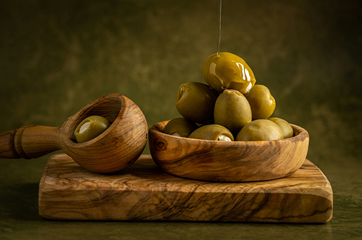

Welcome to Field & Feast
At Field & Feast, we believe that the finest meals begin at the source. Rooted in tradition yet refined for the modern palate, our farm-to-table philosophy celebrates the beauty of seasonality, sustainability, and craftsmanship. From the sun-drenched fields where our produce is grown to the artfully curated dishes we serve, every detail is designed to bring you an experience of unparalleled quality and flavor.
Our Offerings
Artisan Provisions
Hand-selected, seasonal ingredients sourced from our estate farm and trusted local growers. Each item is chosen for its freshness, flavor, and integrity.
Exclusive Dining Experiences
Join us for intimate chef-led tastings and farm-to-table feasts, where carefully crafted menus highlight the best of the season.
The Field & Feast Monthly Basket
Experience a curated selection of premium seasonal ingredients delivered to your doorstep each month.
- Hand-Harvested Produce: Fresh, organic fruits and vegetables.
- Artisan-Crafted Goods: Specialty cheeses, house-made preserves, and small-batch baked goods.
- Exclusive Recipes & Pairings: Thoughtfully designed by our chefs to inspire culinary creativity.
Elevate your home dining with the finest farm-to-table offerings, elegantly packaged and delivered with care.
A Gallery of Field & Feast
Experience the elegance and artistry behind Field & Feast through our curated collection of images. From lush fields and handcrafted ingredients to beautifully plated farm-to-table creations, each photo tells the story of our commitment to excellence.

Heirloom tomatoes at peak ripeness

Drizzling golden olive oil over fresh harvest

Elegant tablescape under the evening sky.

Artful plating with seasonal ingredients.

Our monthly basket,curated with care.